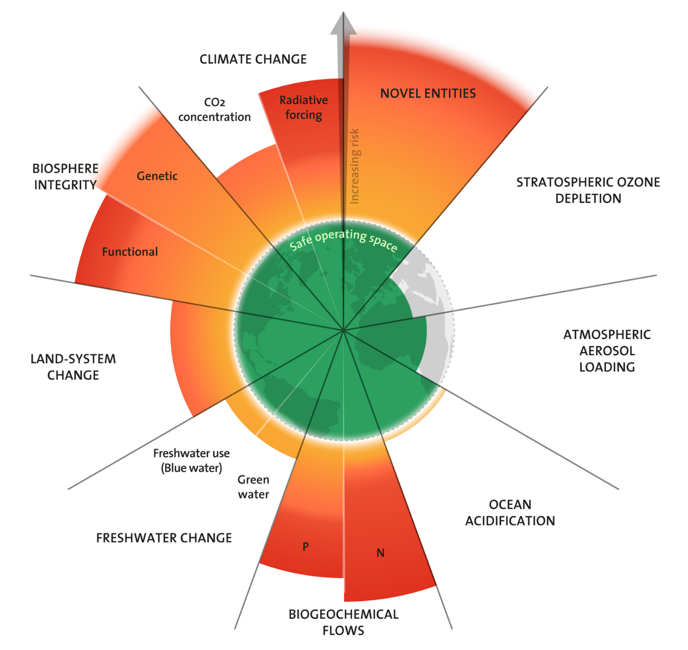
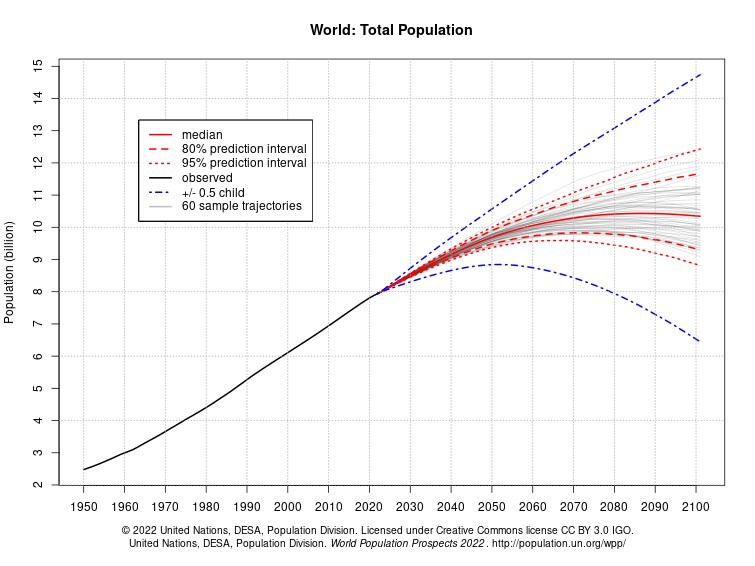
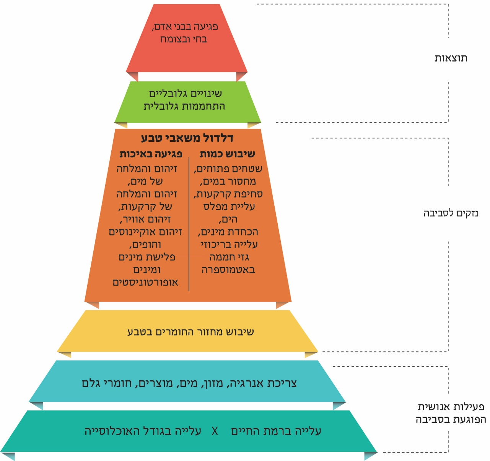
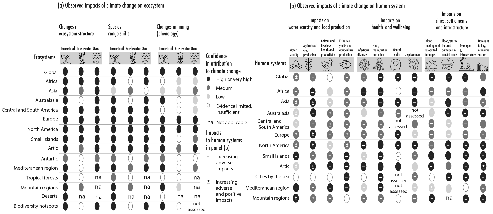

”All people — living in ancient or modern times, in luxury or destitution, in mega-cities or vast hinterlands — depend intimately and utterly on nature. Through the microbiome inhabiting our body, the nature in local parks and farms, and exotic forests and underwater realms across the world, we are all deeply embedded within the web of life. This extremely subtle and extensive net of relationships sustains and fulfills us, providing the material basics of nutrition, health, and security to ethereal senses of attachment, beauty, and spirit.“
Gretchen C. Daily, Stanford University, 2021
מבוא - עקרונות, היסטוריה והגורמים למשבר הסביבה והאקלים#
חדשות לבקרים אנחנו נתקלים בנבואות אפוקליפטיות על הרס כדור הארץ ועל העתיד הלוהט הצפוי לנו.[1] המושג ”משבר האקלים“ אינו יורד מהכותרות כבר שנים מספר, וההתרעות לגבי חומרתו מחריפות יותר ויותר.[2] העלייה המשמעותית בטמפרטורה הממוצעת הגלובלית, לצד החרפת תדירותם ועוצמתם של אירועי אקלים קיצוניים, מהוות את הזרז המרכזי להתעוררות השיח הציבורי סביב משבר האקלים (ראו פרק 6). בקרב הציבור ובתקשורת מתגברת התחושה שהזמן הנדרש לתיקון אוזל,[3] ויש הטוענים שהוא כבר אזל.[4] רוב תשומת הלב הציבורית והתקשורתית מתמקדת במשבר האקלים,[5] אולם משבר זה הוא רק חלק ממשבר עמוק ונרחב יותר, הכולל גם את זיהום הסביבה ופגיעה נרחבת במכלול היצורים החיים על פני כדור הארץ (הבִּיּוֹטָה – יְצוּרָה).[6] לכן, התמודדות עם משבר האקלים מחייבת בו בזמן התייחסות לסוגיות נוספות שחלקן קשורות ישירות במשבר זה (למשל, עליית מפלס הים עקב המסת קרחונים) וחלקן אינן קשורות בו (למשל, זיהום גופי מים בחלקיקי פלסטיק).[7]
הפתרונות למשבר הסביבה והאקלים תלויים בראש ובראשונה בשינוי פרדיגמות חברתיות, כלכליות ומוסריות, אם כי גם לטכנולוגיה שמור תפקיד חשוב מאוד.[8] יתרה מזאת, הפתרונות הטכנולוגיים חייבים להתבסס על הבנה מעמיקה של מורכבות האתגר, מתוך התייחסות לסתירות בין יעדים שונים. ללא ביצוע שינויים חברתיים, כלכליים ומוסריים, שיפורטו בהמשך, משבר הסביבה והאקלים עלול להחריף ולהוביל לשרשרת בלתי פוסקת של משברים בריאותיים, חברתיים, כלכליים ופוליטיים ולהוות סכנה לאומית במדינות רבות.[9]
המחקר המדעי הסביבתי העומד במוקד הספר מתעד את השפעת בני האדם על תהליכים המתרחשים בסביבה.[10] בעשורים האחרונים הושקעו מאמצים לתעד ולהעריך את השפעת האנושות על חלקים מסוימים של הסביבה, למשל על עולם החי, או על תהליכים גאולוגיים בפני השטח של כדור הארץ.[11] במקביל פותחו מדדים כלליים שניסו לתכלל את השפעת האדם על כל כדור הארץ. מדדים אלה יוצגו בהמשך הפרק ובפרקים הבאים. המחקר המדעי הסביבתי הוא במקרים רבים מחקר בין-תחומי, והוא ממשיך ומיישם מחקרים דיסציפלינריים בתחומי הביולוגיה (אקולוגיה, מיקרוביולוגיה, טוקסיקולוגיה ואפידמיולוגיה), מדעי כדור הארץ (הידרולוגיה, פדולוגיה [חקר הקרקע], מדעי האקלים, מדעי האטמוספרה, אוקיינוגרפיה), הכימיה והפיזיקה, שנערכו במאות השנים האחרונות.
אבני דרך בהתפתחות המודעות לבעיות הסביבה#
ההכרה בכך שהאדם מסב נזקים סביבתיים ניכרים מתועדת בכמה כתבים כבר בעת העתיקה,[12] וחלקם יוזכרו בפרקים 8, 9 ו-11. מאז פרסום ספרו של תומאס מלתוס (Malthus) בשנת 1798,[13] מתנהל ויכוח בין שתי גישות של חוקרי סביבה. מצד אחד נמצאים ה“מלתוסיאנים“ (ומאוחר יותר הנאו-מלתוסיאנים) הטוענים שאם האנושות תמשיך בקצב הצמיחה הכלכלית ובגידול האוכלוסייה הנוכחיים, העולם יתרושש ממשאביו או יזדהם בצורה קיצונית.[14] בעקבות זאת צפויה תקופה ממושכת של אסונות ומחסור שיובילו אפילו לקץ הציביליזציה האנושית בצורתה המוכרת לנו. בצד האחר ניצבים אנשי ”קרן השפע“ (cornucopians),[15] הטוענים שהיצירתיות והידע האנושי ימצאו פתרון לכל מחסור במשאבים, וימירו משאב שהתכלה במשאב אחר. ויכוח זה מתואר בצורה מרתקת בספרו של צ’ארלס מאן (Mann) משנת 2018.[16] בשנת 1864 פורסם ספרו של ג’ורג« מארש (Marsh), שהצביע על השפעתו מרחיקת הלכת של האדם על הסביבה הטבעית, וצוינו בו תובנות ואזהרות המהדהדות גם כיום.[17]
כבר במהלך המאה ה-19 קמו ארגונים בכמה ארצות במטרה לייעד שטחים, שהטבע הפראי יישמר בהם, ושכל סוגי ההתערבות האנושית בהם יהיו צריכים להיות מוגבלים ככל האפשר (ראו פרקים 7, 8). אולם המודעות לנושא גברה במידה רבה רק בסוף שנות ה-40 ובתחילת שנות ה-50 של המאה ה-20 עם התרחשות אירועים של זיהום אוויר קיצוני במרכזי ערים, שהובילו לתחלואה ולתמותה מוגברות. המפורסם ביניהם הוא זיהום האוויר הקשה שפקד את לונדון בדצמבר 1952 (ראו פרק 11).[18] אירועים אלה עוררו תשומת לב ציבורית למפגעים סביבתיים, בעיקר בקרב אזרחי מערב אירופה וארצות הברית. סדרת מאמרים וספרים שהתפרסמו החל משנת 1948,[19] ובייחוד כמה ספרים ומחקרים שפורסמו במהלך שנות ה-60, הצביעו על מגוון בעיות סביבתיות חמורות. למרות זאת, חלפו שנים בטרם התעוררה תנועה המונית של אזרחים ומדענים מודאגים. באפריל 1970 התקיים אירוע סביבתי מכונן: The (first) Earth Day.[20] מיליוני אמריקנים יצאו לרחובות ביותר מ-2,000 יישובים ושכונות ברחבי ארצות הברית, והפגינו נגד הפגיעה בטבע ובסביבה. אירוע זה היה אבן דרך מרכזית בתהליך הקמתה של התנועה הירוקה בארצות הברית. שמירת הטבע מחד גיסא והמודעות לנזקי זיהום הסביבה מאידך גיסא מסמנות את ראשיתה של המודעות הסביבתית.
בשנת 1962 פרסמה רייצ’ל קרסון (Carson) את ספרה המכונן Silent Spring – ”האביב הדומם“, שהשפעתו ניכרת גם כיום. [21]קרסון מתארת את הנזק רחב ההיקף שנגרם לבעלי חיים (למשל, היעלמותן של ציפורי השיר) ולבני אדם עקב שימוש בלתי מבוקר במדבירי מזיקים בחקלאות ובתהליכי ייצור מזון (בעיקר DDT וזרחנים אורגניים – organophosphates).[22] בשנת 1968 פרסמו אנה ופול ארליך (Ehrlich) את ספרם מעורר המחלוקת The Population Bomb.[23] הספר הוא אחד בסדרת ספרים ומחקרים, שהתריעו על קצב גידול האוכלוסייה הגבוה וצפו עשורים של רעב המוני.[24] באותה שנה פרסם גארת הרדין (Hardin) מאמר על הטרגדיה של המשאב המשותף (קרקע, אוויר, מקורות מים ואוקיינוסים), [25]אולם בגלל הזיקה של הרדין לתנועה האאוגנית (Eugenics),[26] זכה מאמרו למבקרים רבים בתנועה הסביבתית ומחוץ לה.[27] בהקשר זה, ראוי לציין שבשנת 1968, השנה שבה פרסמו ארליך והרדין את עבודותיהם, היו כ-חמישה ילדים לאישה בממוצע עולמי, בעוד שבשנת 2020 היו רק 2.3 ילדים לכל אישה בממוצע, והגידול השנתי במספר בני האנוש ירד מ-2.2% בשנת 1963 ל-0.9% בשנת 2023 (ראו להלן).[28] מאמר מדעי חשוב נוסף התפרסם בשנת 1969.[29] מאמר זה, שנכתב בהובלת קלייר פטרסון (Patterson), התמקד במתכת הרעילה עופרת והראה שזיהום הסביבה על ידי בני אדם, מגיע אפילו לפינות הנידחות ביותר בכדור הארץ. מאמר זה הראה כי זיהום הסביבה על ידי בני אדם איננו תופעה חדשה, וכי אפשר למצוא עקבות לזיהום עופרת גם לפני יותר מאלף שנה.
בעקבות העבודות הללו התפרסמו כמה מחקרים במהלך שנות ה-70 של המאה ה-20 שהציגו את הבעייתיות הטמונה באוכלוסייה אנושית ובכלכלה, הצומחות ללא הפסקה בתוך עולם בעל משאבים מוגבלים. בשנת 1972 פורסם הדוח הראשון של ”מועדון רומא“ (The Club of Rome),[30] שעסק בקיומם של גבולות לצריכה ולכלכלה העולמיות. בשנת 1977 פרסם הרמן דיילי (Daly) את ספרו Steady-State Economics ובשנת 1980 פרסם ויליאם קטון (Catton) את ספרו Overshoot, ספרים שביטאו מסרים דומים בהדגשות אחרות.[31] חיבורים אלה, יחד עם הספר ”פצצת אוכלוסין“ של בני הזוג ארליך משנת 1968, הגדירו את התפיסה הנאו-מלתוסיאנית לגבי היחסים בין החברה האנושית לבין כדור הארץ. המסר העיקרי שלהם היה שאי אפשר לקיים לאורך זמן כלכלה מבוססת חומרי גלם, הגדֵלה ללא הפסקה ומשמשת אוכלוסייה המתרבה בקצב מהיר, בתוך מסגרת של עולם סופי מבחינת שטח ומשאבים. את הגעתה של המודעות הסביבתית למרכז הבמה הפוליטית והציבורית ניתן לייחס לסגן נשיא ארצות הברית אל גור (Gore), שפרסם בשנת 1993 ספר רב תהודה על מצב הסביבה.[32] אבני הדרך שצוינו מעידות על התפתחות המודעות הסביבתית מאמצע המאה ה-20 ועד היום (טבלה 1.1). המסע שהחל בספרה פורץ הדרך של רייצ’ל קרסון, עבר דרך גיבוש הגישה הנאו-מלתוסיאנית של מועדון רומא וההכרה בהיקפם ובעוצמתם של הנזקים הסביבתיים שבני האדם גורמים, ובמקביל לכל אלה, העלייה של המודעות הציבורית והפוליטית. באותה תקופה חלה התפתחות גם במחקר הסביבתי (מדעי הסביבה),[33] בעיקר בשיטות המחקר בתחומים שיפורטו בהמשך הפרק.
אף שבמהלך השנים התבהר כי אנו ניצבים מול מגוון רחב של בעיות סביבתיות, בכל זמן נתון התמקדה המודעות הסביבתית בנושא אחד בלבד. למשל, בשנות ה-60 של המאה העשרים עמדו במוקד תשומת הלב חומרי הדברה והנזק שהם גורמים; בשנות ה-70 וה-80 היא התמקדה בזיהום אוויר ומשקעים (גשם ושלג) חומציים; בשנות ה-90 היא התמקדה בהידלדלות האוזון הסטרטוספרי,[34] וכיום – ההתחממות הגלובלית ובמידה פחותה הכחדת מינים נמצאים במוקד תשומת הלב. נושאים נוספים כמו פיזור רעלים בסביבה (כגון עופרת, כספית או פלסטיק) או סחיפת קרקעות – זכו לתשומת לב מועטה יותר או קצרת טווח.
{kind=link}

Fig. 1 איור 1.1: גבולות פלנטריים (א) מעודכן לשנת 2025; (ב) בשנים 2009, 2015, 2023. מקור: Azote for Stockholm Resilience Centre. CC BY-NC-ND 3.0 - Planetary boundaries - Stockholm Resilience Centre, Reprinted with permission.#
The great smog, London (1952)
\(\ce{CO2}\) rise, the Mauna Loa record – C. Keeling (1957)
Silent Spring, bio-magnification of pesticides - R. Carson (1962)
Pollution is global & ancient, Pb in ice cores – C. C. Patterson (1969)
Earth Day – G. Nelson & D. Hayes (1970)
Limits to Growth – The Club of Rome (1972)
The central role of oceans in climate regulation – W. Broecker & DSDP
(1970s)
The stratospheric \(\ce{O3}\) depletion – M. Molina & S. Rowland (1974–1980s)
The Gaia Hypothesis – J. Lovelock & L. Margulis (1970s)
Ecological Footprint concept – W. Rees & M. Wackernagel (1992)
Earth in the Balance – A. Gore (1992)
Global warming – 1896 (S. Arrhenius), 1930s (G. Callendar), 1970s,
1990s (Rio – 1992) - present (COP21 - Paris 2015, COP30 - Brazil)
תיעוד הבעיה הסביבתית באמצעות מדדים רב-ממדיים#
במקביל למחקרים דיסציפלינריים, נעשו במחצית השנייה של המאה ה-20 גם ניסיונות לכמת את השפעתה הכוללת של האנושות על הסביבה באמצעות מדדים רב-ממדיים. הראשון שבהם נקרא ”מִדְרך אקולוגי“ (ecological footprint), כלומר כמות משאבי הטבע הנדרשים כדי לתמוך באורח החיים של קבוצת אנשים או אדם מסוים.[35] מדדים נוספים הם ”יכולת הנשיאה“ (carrying capacity), כלומר האוכלוסייה המרבית ששטח מסוים יכול לכלכל[36] ו“גבולות פלנטריים“ ((planetary boundaries, כלומר התחום שבו האנושות יכולה להתקיים בצורה בת קיימה.[37] העקרונות שפותחו בהם התמקדו מצד אחד בזיהום שאליו נחשפים בני אדם ובהשפעתו על בריאותם,[38] ומצד אחר בהשפעתה של הפעילות האנושית והזיהום הנובע מכך על מערכות אקולוגיות (אקוסיסטמות – ecosystems)[39] טבעיות ועל כלל כדור הארץ. בנוסף לכל אלה, יש מאמץ של גופים רבים (e.g., WMO, NASA, NOAA, USGS, WHO) לנטר תהליכים ולתעד את תנאי הסביבה בקנה מידה עולמי (reference quality datasets - RQDs). חלק ניכר מהגופים הללו מקבלים מימון ממשלת ארצות הברית, מימון הנמצא בסכנה בעקבות עלייתו של טרמפ לשלטון בשנת 2025.[40]
מדד ”הגבולות הפלנטריים“ הוא ניסיון הנמשך כבר כמה שנים לכמת את חומרת השינויים שמחוללים בני אדם על פני כדור הארץ כולו. איור 1.1א מציג את השפעת האנושות על כדור הארץ בתשעה תחומים, בשנת 2025: (1) פיזור חומרים סינתטיים שאינם נמצאים בטבע (novel entities); (2) הידלדלות שכבת האוזון בסטרטוספרה (stratospheric ozone depletion); (3) ריכוז אירוסולים באטמוספרה (atmospheric aerosol loading); (4) החמצת האוקיינוסים (ocean acidification); (5) שטפים ביוגאוכימיים של חנקן (N) וזרחן (P) (biogeochemical flows); (6) צריכת מים שפירים (freshwater use); (7) שינוי שימושי קרקע (land-system change); (8) יציבות המערכת הביולוגית (biosphere integrity); (9) שינויי אקלים (climate change).
בכל אחד מהמדדים הללו נעשתה הערכה האם הוא נמצא עדיין בתחום הבטוח בממוצע עולמי (האזור הפנימי, הירוק), או שאין לגביו מספיק מידע (אפור רק באיור 1.1ב), או שהוא חורג לאזור המסוכן ובאיזו מידה (כתום; ככל שהחלק הכתום, כך חומרת החריגה גדולה יותר). להערכת המחברים, בשנת 2023 רק שלושה מתוך תשעת המדדים נמצאים עדיין באזור הבטוח: (1) הידלדלות שכבת האוזון בסטרטוספרה; (2) ריכוז אירוסולים באטמוספרה; (3) החמצת האוקיינוסים, ובשנת 2025 דווח שגם גבול זה נחצה (איור 1.1א).[41] בשישה מדדים יש חריגה לאזור המסוכן: (1) פיזור חומרים סינתטיים; (2) שטפים ביוגאוכימיים של חנקן וזרחן; (3) צריכת מים שפירים; (4) שינוי שימושי קרקע, (5) יציבות המערכת הביולוגית; (6) שינוי אקלים. המחברים טוענים שהחריגות החמורות ביותר נמצאו במדדים של פיזור חומרים סינתטיים שאינם טבעיים, שטפים ביוגאוכימיים של חנקן וזרחן, ויציבות המערכת הביולוגית. איור 1.1ב מציג את המצב בשנים 2009, 2015 ו-2023 ומראה כיצד מצב הסביבה הולך ומחמיר וכיצד פוחת המידע החסר (השטחות האפורות שמופיעות בשנים 2009 ו-2015, אך לא בשנים 2023 ו-2025).[42] כל הנושאים המופיעים באיור יפורטו בפרקים הבאים של הספר.
הגורמים לפגיעה בסביבה#
דיון במשבר הסביבה והאקלים צריך להתחיל בגורמים ולא בסימפטומים. בהמשך למה שנכתב לעיל, הנחת העבודה שלי ושל רבים לפניי, היא שגידול האוכלוסייה (מספר הנולדים פחות מספר המתים) והעלייה ברמת החיים של פרטים ושל חברות, הגורמים לעלייה בצריכת מוצרים, הם המקור לבעיות הסביבתיות. הגידול במספר האנשים על פני כדור הארץ צבר תאוצה ב-100 השנים האחרונות, ובדומה לשינויים סביבתיים אחרים, כאשר עוברים מגידול לינארי לגידול מעריכי (ראו להלן) יש סיבה לדאגה. עברו יותר מ-300,000 שנים מאז הופעת האדם הנבון (Homo sapience)[43] עד שאוכלוסיית האנושות הגיעה למיליארד נפש בראשית המאה ה-19. מאז ועד היום אוכלוסיית העולם גדֵלה בקצב של %0.4–2.2% בשנה (השיא היה בשנים 1952–1987).[44] מאז ראשית המאה ה-19 חלפו כ-128 שנים עד שאוכלוסיית בני האדם הגיעה ל-2 מיליארדים (1928), 32 שנים נוספות עברו כדי להגיע ל-3 מיליארדים (1960). מאז ועד היום נוספים מיליארד אנשים מדי עשור עד שני עשורים, ורף 8 מיליארדי אנשים נחצה בסוף שנת 2022.[45]
הסיבה העיקרית לעלייה בריבוי הטבעי החל מהמאה ה-19 היא הירידה בתמותת תינוקות וילדים (בעיקר בנות הקובעות את מספר הנולדים) מתחת לגיל הפריון.[46] הממוצע העולמי של תמותה לפני גיל הפריון עומד כיום על כ-4%.[47] בתנאים שבהם תמותת תינוקות וילדים היא נמוכה יחסית, ”מדד פריון האישה“, מספר הילדים שאישה יולדת במהלך חייה (שיעור פריון כולל, ,Total Fertility Rate להלן: TFR) הוא מדד הריבוי הממצה בצורה נכונה ובהירה את גידול האוכלוסייה בארצות שונות ואת המגמה הצפויה בגידול האוכלוסייה (עם פער של כ-30 שנה – ראו להלן את המקרה של סין). כפי שצוין קודם, עד שנות ה-60 של המאה ה-20 הממוצע העולמי של ערכי TFR היה מעל חמישה ילדים לאישה (עם קרוב ל-40% תמותת ילדים), ומאז הוא נמצא בדעיכה מתמדת.
כיוון שהמספר המוחלט של אנשים בכדור הארץ גדל עם הזמן, הירידה הניכרת בפריון האישה בכל זאת מלוּוה בתוספת של עשרות מיליוני אנשים מדי שנה. שיא הגידול היה בשנת 1990 עם תוספת של 92.5 מיליון אנשים, ומאז חלה ירידה גם במספר המוחלט, כאשר בשנת 2021 נוספו כ-68 מיליון אנשים.[48] יש שונות גדולה מאוד בתמותת ילדים, בערכי TFR ובכל הפרמטרים הדמוגרפיים הנגזרים מהם בארצות שונות: במדינות העשירות והמתועשות (מערב אירופה ויפן במיוחד) ערכי ה-TFR משקפים ריבוי שלילי כבר כמה שנים, ובחלק מהמדינות כבר דווח על צמצום האוכלוסייה או על המשך גידול רק בעקבות הגירה.[49] לעומת זאת, במרבית ארצות אפריקה קצב גידול האוכלוסייה עדיין גבוה מאוד,[50] ורבים גורסים כי המפתח להאטה בקצב הריבוי באפריקה תלוי במידה רבה בשיפור החינוך הניתן לבנות ולנשים, שצפוי להביא להעלאת גיל הלידה.[51] במקביל יש צפי שההגירה מאפריקה לארצות שונות ברחבי העולם, בעיקר לאירופה, לצפון אמריקה ולארצות המפרץ, תגדל בעשורים הקרובים ותחריף בגלל מגוון סיבות, ובכללן משבר האקלים.[52]
הערך של ה-TFR הממוצע העולמי הגיע בשנת 2022 ל-2.3[53] ועתיד להגיע ל-2.1, שהוא הסמן לעצירת גידול האוכלוסייה,[54] ככל הנראה בעוד כמה עשרות שנים. תזמון העצירה בגידול מספר בני האדם והמספר המרבי שאליו תגיע האנושות שנויים במחלוקת בין החוקרים. איור 1.2 מראה את טווח ההערכות של האו“ם עד שנת 2100 ברמת ודאות של 95% ובאופנים נוספים. ההערכות למספר המרבי של בני האדם נעות בין כ-9 ועד מעל 12 מיליארד אנשים. בעשור האחרון התפרסמו הערכות של שני גופים אחרים לגבי גידול האוכלוסייה העולמית, והן צופות גידול מתון יותר.[55] ההערכה של IIASA (The International Institute for Applied Systems Analysis) משנת 2014 היא שאוכלוסיית העולם תגיע ל-9.7 מיליארד אנשים בשנת 2070 ותרד לכ-9 מיליארד בשנת 2100. ההערכה של IHME (Institute for Health Metrics and Evaluation) משנת 2020 היא שאוכלוסיית העולם תגיע לשיא גודלה (9.7 מיליארד) בשנת 2064, ואז תרד לכ-9 מיליארד ב-2100.[56]
התהליכים שאירעו בסין בעשורים האחרונים מדגימים כמה היבטים חשובים בהקשר הדמוגרפי-כלכלי-סביבתי. החל משנת 1991 ה-TFR בסין נמוך מ-2, ובשנת 2021 הגיע לערך נמוך במיוחד של 1.2.[57] למרות זאת המשיכה אוכלוסיית סין לגדול, אם כי בקצב הולך ופוחת, עד שנת 2022. במקביל, חלה בסין עלייה ניכרת ברמת החיים, המתבטאת בעלייה בתמ“ג (GDP) לנפש מ-3,200 דולר בשנת 1992 ל-13,100 דולר בשנת 2018 (בתיקון אינפלציה). כלומר, עלייה פי ארבע בתמ“ג לנפש.[58] בעקבות שינוי זה עלה במידה רבה המִדרך האקולוגי של סין, מערך של 1.5 מיליארד GHA (global hectares)[59] בשנת 1991 ל-5.3 מיליארד GHA (53 מיליון קמ“ר) בשנת 2017.[60] סין היא כיום המדינה עם המִדרך האקולוגי הגדול ביותר בעולם. היא צורכת יותר משליש מהמשאבים הזמינים בכל כדור הארץ,[61] אם כי חלק ניכר ממשאביה מופנים למוצרי יצוא לשאר העולם. לפיכך האטה בריבוי הטבעי לבדה אינה מספיקה כדי להפחית את הנזק הסביבתי, וכשהיא מלווה בעלייה דרמטית ברמת החיים, סך כל הנזק הסביבתי גדל.
לנוכח כל הנאמר למעלה, הערכת הנזק הסביבתי של האנושות חייבת להביא בחשבון הן את הריבוי הטבעי והן את רמת החיים. מדד מעניין שמאחד את שני המשתנים הללו הוא ה“אמריקום“ (Americium),[62] מונח שטבע טום בורק (Burke)[63] לפני כמה שנים. אמריקום הוא קבוצה של 350 מיליון אנשים המרוויחים בממוצע 15 אלף דולר בשנה כל אחד (כולל ילדים וזקנים), עם תאווה גדולה לצרכנות. במאה ה-20 היו בכדור הארץ שתי יחידות אמריקום, אחת בצפון אמריקה והשנייה באירופה, וכמו כן נמצאו שברי אמריקום בחלקים נוספים של כדור הארץ. כיום יש אמריקום נוסף בסין, עוד אחד בהודו ובשתיהן יש עוד שתי יחידות אמריקום בהתהוות, ובחלקים שונים של העולם מתגבשות עוד כשתי יחידות נוספות. כלומר, עברנו מעולם שבו יש שתי יחידות אמריקום לעולם שבו יהיו שמונה עד תשע יחידות כאלה בעוד שנים ספורות. ברור למעלה מכל ספק שלמעבר הזה יש השלכות סביבתיות, אקלימיות וגאו-פוליטיות מרחיקות לכת, כולל הגירה של אנשים מארצות עניות יחסית לארצות עם רמת חיים גבוהה. מושג האמריקום מתכתב עם משוואת I = P*A*T, הטוענת שהשפעת האנושות על הטבע (I) שווה למכפלה של גודל האוכלוסייה (P), רמת החיים (A) ורמת הטכנולוגיה (T).[64] הסיבה שלא כללתי את רמת הטכנולוגיה בטענה שהצגתי בתחילת פרק זה היא שלדעתי הטכנולוגיה ממלאת תפקיד מרכזי הן בגרימת נזק סביבתי והן במניעתו, בעוד ששני הגורמים האחרים (גודל האוכלוסייה ורמת החיים) גורמים אך ורק לנזק סביבתי, אם כי במידות שונות בהתאם למודעות ולחינוך.
במילים אחרות, השילוב של קצב גידול האוכלוסייה והעלייה ברמת חיים עומד בבסיס כל הנזקים שהאנושות גורמת לסביבה, ובכללם ההתחממות הגלובלית. אוכלוסייה גדלה ועלייה ברמת החיים מחייבות גידול מתמיד בייצור אנרגיה ופליטת גזי חממה, עלייה בתפוקת מזון (חקלאות ודיג), ניצול גובר של משאבי מים לשתייה ולהשקיה, בינוי למגורים, תעשייה ושירותים (ובכללם תיירות פנים וחוץ)[65] וייצור מוגבר של מוצרי צריכה (ביגוד, תחבורה, מכשירים אלקטרוניים ועוד). כל אלה גורמים לנגיסה בשטחים הפתוחים בים וביבשה, לסחיפת קרקעות, לבירוא יערות ולייבוש ביצות ומקווי מים. בעקבות זאת יש פגיעה באיכות האוויר, המים והקרקע הגורמים להכחדת מינים ולפלישת מינים אופורטוניסטים, ובד בבד גם לפגיעה במגוון ובמרקם האקולוגי של הסביבות הימית, המימית, החופית והיבשתית. כל התהליכים הללו מביאים גם לפגיעה כרונית, ולעיתים אקוטית, בבריאות הציבור.
איור 1.3 ממחיש את ההיררכיה של בעיות סביבה, שבבסיסה נמצא השילוב בין גידול במספר בני האדם ועלייה מתמדת ברמת חייהם. שילוב זה גורם, כאמור, לעלייה בצריכת חומרים, אנרגיה, מזון, מים ושטחים פתוחים ולשחרור מזהמים אל הסביבה. הפגיעה הסביבתית כוללת פגיעה כמותית (למשל, עלייה בריכוז גזי חממה באטמוספרה) ופגיעה איכותית (למשל, החמצת האוקיינוסים). פגיעות אלה מתרחשות בחלקים שונים של כדור הארץ ומובילות בסופו של דבר לנזקים בהיקף עולמי, לדוגמה פגיעה בבני אדם, בחיות ובצמחים והתחממות גלובלית. לפיכך פתרון כולל לבעיות הסביבה מחייב שינוי בכמה פרדיגמות חברתיות, כלכליות ומוסריות.[66] שינוי זה מבוסס על שלושה אדנים: (1) עצירת הגידול במספר בני האדם על הכדור (כ-2 ילדים בממוצע לכל אישה לכל היותר); (2) מעבר מכלכלה תלוית צמיחה, המבוססת על צריכת מוצרים, לכלכלה המבוססת על צריכת שירותים שאיננה צומחת בהיבט של משאבי טבע ואנרגיה,[67] ובמקביל מעבר לכלכלה מעגלית (ייצור–שימוש–פירוק–מִחזור חומרי הגלם וייצור מוצרים חדשים)[68] ככל האפשר; (3) הגדלת השוויון הכלכלי, כלומר צמצום הפער בין עשירים לעניים. פירוט הדרכים להשגת יעדים אלה נמצא ברובו מחוץ למסגרת של ספר זה (המתמקד בהיבט המדעי של חקר הסביבה), ואחזור אליו בקצרה בפרק הסיכום. למרות זאת חשוב לציין שפרסומים רבים התעמקו בשאלות אלו, כגון העבודות פורצות הדרך של מועדון רומא, הרמן דיילי וּויליאם קטון שצוינו לעיל, וכן עבודות עכשוויות יותר, כגון של טים ג’קסון (Jackson) וג’ייסון היקל (Hickel).[69] במסגרת ההתמודדות עם שאלות אלו חשוב לבחון את 17 יעדי הפיתוח בר הקיימה (SDG)[70] של האו“ם. יעדי הפיתוח ייבחנו לאורך כל הספר, ובעיקר בפרק הסיכום.
{kind=link}

Fig. 2 איור 1.2: טווח התחזיות של האו“ם לגבי גודל האוכלוסייה העולמית עד שנת 2100. מקור – UN; Reprinted with permission.#
{kind=link}

Fig. 3 איור 1.3: היררכיה של בעיות סביבה#
עקרונות מרכזיים בחקר הסביבה#
יש כמה עקרונות ומאפיינים העוברים כחוט השני במחקר הסביבתי, והם יידונו בפרקי הספר. מרבית העקרונות הללו אינם ייחודיים למדעי הסביבה, והם מאפיינים את כל תחומי המחקר, אולם ראוי להדגיש את הרלוונטיות שלהם למחקר הסביבתי. להלן תיאורם:
1. האנושות והטבע: האנושות והציביליזציה האנושית הן חלק אינטגרלי מהטבע, משפיעות עליו ומושפעות ממנו ומהשינויים החלים בו. ביטוי לעוצמת ההשפעה הזאת הוא השם הגיאולוגי שניתן לתקופה הנוכחית: אנתרופוקֶן – Anthropocene.[71] להרמוניה של האנושות עם הטבע יש טעמים תועלתניים (shallow ecology) וטעמים עמוקים (deep ecology). טעמים תועלתניים כוללים הבטחת השירותים של המערכת האקולוגית ומניעת פגיעה באיכות החיים של בני האדם. הטעמים העמוקים נובעים מזכות הקיום הבסיסית של רכיבי המערכת האקולוגית: בני אדם, חיות, צמחים, מיקרואורגניזמים.[72] דוגמאות לכך מובאות בפרקים 7, 8, 9 ו-10.
2. דברים תלויים זה בזה (”הָא בְּהָא תַּלְיָא“): באופן מובנה (אינהרנטי) אי אפשר להפריד משתנים בתהליכים סביבתיים. הדברים תלויים זה בזה, ובמקרים רבים הסביבה היא מערכת אחת המגיבה במגוון צורות, אופנים וקצבים לאילוצים חיצוניים, טבעיים או אנתרופוגנים (ראו פרקים 2, 6 ו-13).
3. גודל המערכת: ככל שהמערכת המתוארת או הנחקרת גדולה יותר, כך נדרשים מדדים רבים יותר כדי להעריך את מצבה מהבחינה הסביבתית, ושוררת אי-ודאות גדולה יותר לגבי המדדים הללו ולגבי מצב המערכת (ראו פרק 10).[73]
4. זמן תגובה (lag time):[74] לעיתים קרובות קיים פער בזמן בין שינוי בגורם או אילוץ לבין שינוי בסביבה. לדוגמה, היה פער ניכר בזמן בין העלייה בריכוז גזי חממה באטמוספרה בעקבות המהפכה התעשייתית במאה ה-19 לבין עליית הטמפרטורה על פני השטח של כדור הארץ שהחריפה לפני כ-40 שנה. ככל הנראה, במקרה הזה הפער נבע מקיבול החום הגדול של האוקיינוסים (ocean heat content - ראו פרקים 6 ו-10). [75]
5. קצב השינוי: קצב השינוי הוא מדד חשוב מאוד להערכת חומרת השינוי, וחשוב אף לעמוד על סוגו: ישר (לינארי) או מעריכי (אקספוננציאלי). ראו את הדיון לעיל על גידול האוכלוסייה, וכן את פרקים 3 ו-10.[76]
6. אופי השינוי: שינוי יכול לייצר מנגנון של משוב שלילי, המרסן את השינוי (כך למשל עליית הטמפרטורה גורמת להזעה שמקררת את הגוף), או משוב חיובי, המקצין את השינוי. דוגמה למשוב חיובי אפשרי, שממנו חוששים מדענים רבים, היא שהתחממות כדור הארץ תגרום לאידוי מוגבר של מים, ואדי המים שהם גז חממה יעיל ביותר יגבירו את קצב ההתחממות (ראו פרקים 5, 6, 7, 8, 10 ו-12).
7. העבר הוא המפתח להבנת העתיד: כדי לקבל הערכה על חומרת השינויים חשוב להשוותם לעבר. כמעט כל התהליכים הסביבתיים המתרחשים בכדור הארץ כיום התרחשו כבר בעבר, אם כי לעיתים בקצב שונה או עקב גורמים אחרים. על העבר ניתן ללמוד בעזרת רשומות גאולוגיות (archives) טבעיות כמו סדימנטים (משקעים)[77] של אגמים (ראו פרק 9), משקעים ימיים, משקעי מערה, אלמוגים[78] וכן בעזרת ממצאים ארכאולוגיים. ההשוואה בין ההווה לעבר משפרת את יכולת החיזוי שלנו לגבי העתיד, אם היא נעשית נכון ובצורה מושכלת ואם היא כוללת הערכה ריאלית של אי-הוודאות של המדידות ושל רגישות המערכת לשינויים הנמדדים. למשל, השפעת שינויי אקלים על הכחדת מינים,[79] או השינויים בכמות הגשם הצפוי באזורים סובטרופיים בעקבות ההתחממות הגלובלית (ראו פרקים 5, 6, 7, 8, 9 ו-10).[80]
8. זמן שהות (residence time): בהערכת השפעת נזק או זיהום סביבתי על מערכת סביבתית יש לבחון את זמן השהות של המזהם או את הגורם המפריע בסביבה הנחקרת. כלומר, את הזמן הדרוש כדי שהמזהם יחזור לרמות שקדמו להפרעה. לכן, ההבחנה בין נזקים או שינויים הפיכים לבלתי הפיכים סובייקטיבית ומושפעת בעיקר ממשך הזמן המעניין אותנו. בפרקי זמן גאולוגיים (מאות אלפי שנים או מיליוני שנים) כל השינויים שגורמת האנושות לכדור הארץ כנראה הפיכים, מלבד הכחדת מינים ויצירה של מינים חדשים בברירה מלאכותית ובהנדסה גנטית. הערכה ראשונית של זמן שהות מתקבלת מחישוב היחס שבין גודל המאגר (יחידות של מסה או נפח) לבין שטף הכניסה (או היציאה) אליו (יחידות של מסה או נפח ליחידת זמן (ראו פרקים 4, 5, 8, 9, 10 ו-11).
9. עקרון הַהִזָּהֲרוּת המקדימה (precautionary principle): מדובר בגישה פילוסופית ומשפטית רחבה הבוחנת נקיטת צעדים בעלי פוטנציאל לגרימת נזק או להימנעות מצעדים כאלה, במצבים שבהם חסר ידע מדעי מקיף בנושא. העיקרון משמש לעיתים קרובות קובעי מדיניות במצבים שבהם ייתכן שקבלת החלטה מסוימת תסב נזק וראיות מכריעות עדיין אינן זמינות. העיקרון מכיר בכך שאומנם התקדמות המדע והטכנולוגיה הביאה לעיתים קרובות תועלת רבה לאנושות, אך בד בבד גם תרמה ליצירת איומים וסיכונים חדשים. הוא מרמז שיש אחריות חברתית להגן על הציבור מחשיפה לנזק כזה, כאשר מחקר מדעי מצא סיכון סביר. הדוגמה הבולטת ביותר בנושא סביבה היא השימוש בדלקים פוסיליים (דלקי מחצבים – fossil fuels), הגורמים לדעת מרבית המדענים להתחממות גלובלית ולזיהום, אולם מציאת תחליפים מחייבת השקעות עתק. עקרון ההיזהרות המקדימה מחייב לנקוט את כל האמצעים הנדרשים להפסקת השימוש בדלקים פוסיליים, משום שהנזק הצפוי מהמשך השימוש בהם עולה עשרות מונים על עלות מציאת תחליפים (ראו פרקים 3, 6). דוגמה אחרת היא הדרישה להימנע מכריית מתכות בקרקעית הים העמוק, סביבה שעליה יש מידע חלקי ביותר (ראו פרקים 4 ו-10).
10. סולם הערכים: כמעט בכל המקרים שבהם מנסים לפתור בעיה או מטרד סביבתי מתברר שיש לכך מחיר כלכלי, לעיתים חברתי, ולעיתים נגרם נזק סביבתי אחר במקום זה שמנסים לפתור.[81] ההחלטה אם לטפל בבעיה או שלא לטפל בה תלויה ברוב המקרים בסולם הערכים ובהעדפות של הגופים המעורבים, כולל הנכונות לשלם על כך מחיר כלכלי. במקרים רבים יש חילוקי דעות, כפי שאדגים לאורך הספר. דוגמאות לחילוקי דעות כאלה מובאות בכל פרקי הספר. כך למשל בפרק 7, הדן בפגיעה בביוספרה, אציג כמה דילמות בנושא ההתמודדות עם נושאי שמירת טבע והגנה על מגוון המינים.
ההתחממות הגלובלית, העומדת במוקד פרק 6 ועוברת כחוט השני בכל פרקי הספר מדגימה בצורה ברורה ביותר את העיקרון החשוב שדברים תלויים זה בזה (”הא בהא תליא“).[82] בפרק 3 מתואר הקשר בין מקורות האנרגיה לבין פליטות גזי חממה לאטמוספרה, בפרק 6 מתוארת ההשפעה ההדדית בין ריכוזי גזי חממה לבין התחממות גלובלית, ובפרק 9 מודגש הקשר החזק בין זמינות מים באזורים הטרופיים לבין מחזור הפחמן.[83] יש דוגמאות נוספות לקשר בין התחממות גלובלית לבין תהליכים מרכזיים רבים: (1) תהליכים בעולם החי בכל הרמות (פרק 7);[84] (2) פעילות פוטו-סינתטית בהיקף עולמי ואזורי (פרקים 2, 7, 8);[85] (3) עוצמה וכיווני זרמים באוקיינוסים, יצירת אזורים חמים בלב הים[86] והגברת הזיהום באזורי חופים (פרק 10);[87] (4) חקלאות (פרק 2); (5) בריאות הציבור,[88] הפצת מחלות נגיפיות (פרקים 11, 12)[89] ועוד.
איור a1.4 מפרט את מגוון ההשפעות של ההתחממות הגלובלית על מערכות אקולוגיות (מבנה המערכות, אזורי מחיה, תזמון פעילות) בסביבה היבשתית, בגופי מים מתוקים ובאוקיינוסים באזורים שונים בכדור הארץ.[90] איור b1.4 סוקר את השפעת ההתחממות הגלובלית על האנושות (זמינות מים ומזון, בריאות ורווחה, ערים, יישובים ומבני תשתית). נראה שהאנושות, עם כל הטכנולוגיה העומדת לרשותה, מהווה חלק אינטגרלי מהטבע ומהסביבה, וכך משפיעה על ההתחממות הגלובלית ומושפעת ממנה (עקרון מספר אחד). איור 1.4, על שני חלקיו, מציג גם את הערכה של מידת הוודאות של הצפי, המשקף את העיקרון השלישי (גודל המערכת). אפשר היה להשתמש בנושאים אחרים המוזכרים בספר זה (למשל, מחזורים ביוגאוכימיים) כדי להדגים את העקרונות הללו, אולם להתחממות הגלובלית שמור מקום מיוחד מפאת העניין הרב שהיא מעוררת בשנים האחרונות והעובדה שהמאבק בתופעה (משבר האקלים) מצליח להניע גייסות של אנשים ואנשי מדע, שעד לאחרונה לא היו מוטרדים מבעיות הסביבה ומהנזק שהאנושות גורמת לכדור הארץ על מרכיביו השונים.
{kind=link}

Fig. 4 איור 1.4: ההשפעה של ההתחממות הגלובלית על מערכות אקולוגיות, חקלאות, משאבי מים ובני אדם. (א) השפעה על מערכות אקולוגיות; (ב) השפעה על בני אדם ומערכות אנושיות. מקור: IPCC (2022), Cambridge Reprinted with permission א. IPCC (2022), Cambridge Reprinted with permission#
מבנה הספר#
פרק המבוא מציג את התשתית הרעיונית של הספר ודן בקצרה בהתפתחות המודעות הציבורית לבעיות הסביבה ובסיבות למשבר הסביבתי-אקולוגי-אקלימי. פרקים 2–4 מציגים את הפעילויות האנושיות שיש להן ההשפעה הגדולה ביותר על כדור הארץ ועל תנאי הסביבה: חקלאות ויצור מזון (פרק 2); הפקת אנרגיה (פרק 3); פעילות תעשייתית ושימוש בחומרי גלם (פרק 4). פרקים 5–11 עוסקים בהשפעות של פעילות בני האדם על מגוון רכיבים ותהליכים בכדור הארץ. פרק 5 דן במחזורים הביוגאוכימיים של כמה יסודות כימיים בעלי השפעה סביבתית ניכרת (למשל רעילות) בפני השטח של כדור הארץ ובהשפעת בני האדם על המחזורים הללו. פרק 6 דן באקלים וההתחממות הגלובלית, נושא המרתק כיום את רוב הציבור וזוכה לתשומת לב רבה מצד הקהילה המדעית. השפעת בני האדם על מרכיבי סביבה שונים מופיעה בפרקים הבאים: עולם החי והצומח (פרק 7); קרקעות ושטחים פתוחים (פרק 8); גופי מים יבשתיים (פרק 9); האוקיינוסים (פרק 10); האטמוספרה (פרק 11). פרק 12 מתאר את הבעיות הסביבתיות במרחב העירוני, ופרקי הסיכום מציגים את האתגרים והדרכים למציאת פתרון למשבר (פרק 13) ואת מצב הסביבה בישראל (פרק 14). הנספחים מציגים את האֲמָנוֹת העיקריות שעסקו בנושאי סביבה ודמויות מעוררות השראה במחקר ובתנועה הסביבתית.